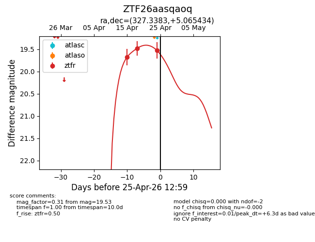
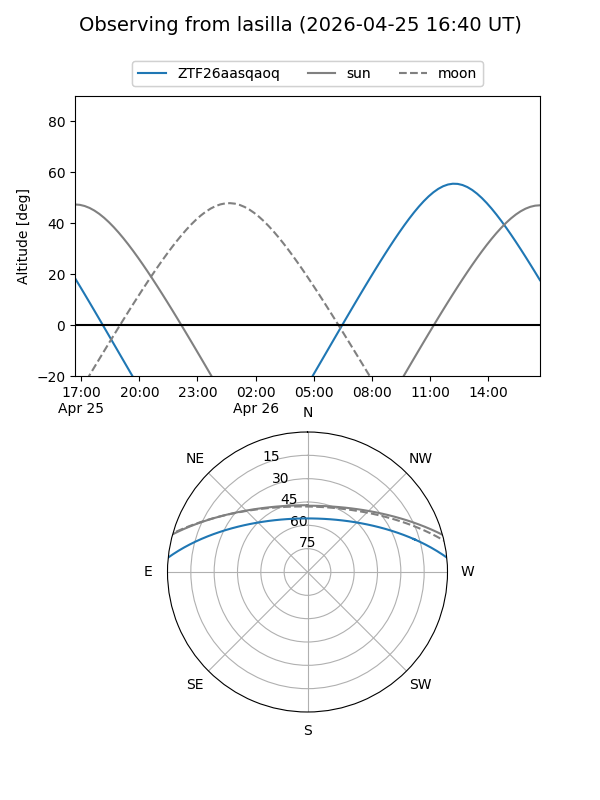
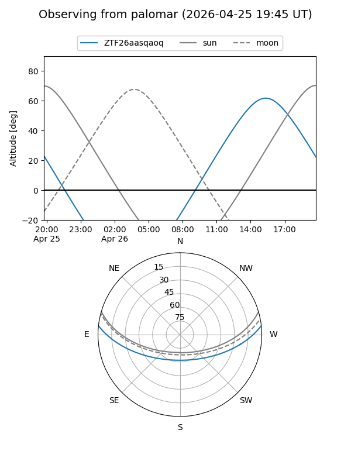
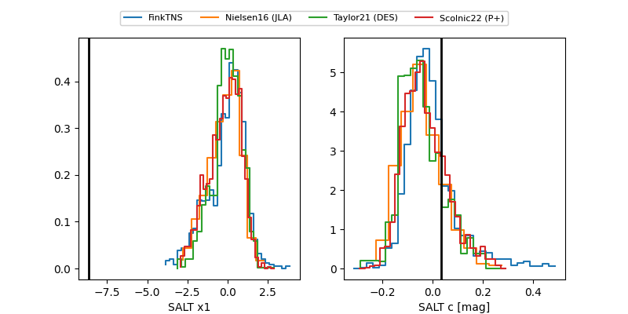

ZTF26aasqaoq
Target ZTF26aasqaoq at 2026-04-25 13:00
Aliases and brokers:
FINK: link
Lasair: link
ALeRCE: link
alt names
ZTF26aasqaoq (ztf,fink_ztf)
Coordinates:
equatorial (ra, dec) = 327.3383,+5.06543
equatorial (HMS+DMS) = 21:49:21.20,+05:03:55.56
galactic (l, b) = (62.1077,-35.51183)
Flags:
Photometry:
last ztfr=19.53
3 ztfr detections
Lightcurve

Visibility


Additional plots
